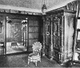
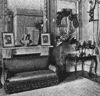
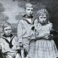

Collective Biographies of WomenAn Annotated Bibliography
Alison Booth
396.
Hedemann, Franzisca, Baroness von. Love Stories of Court Beauties. Illustrated. New York: Doran, 1917.
Search OCLC WorldCat for this title.
Search Google Books for this title.
Hedemann, Franzisca, Baroness von. Love Stories of Court Beauties. Illustrated. New York: Doran, 1917.
TOC: Court Beauties of the Second Empire; Recollections of Queen Victoria; Royal Gamblers and Their Amours; Court Society Around the Prince of Wales; The Gallantries of His Royal Highness; Brides and Wedding Gowns of the Court of St. James; A Royal Love Affair; Authors and Actors of King Edward's Reign; The Modern Spirit of King Edward's Rule; His Majesty's Last Affair of the Heart; Some Beauties of King Edward's Reign; Personal Anecdotes of Queen Mary; Some Beautiful American Women in England; Her Majesty the Queen of Roumania; Other Memories in England; Some Famous Grandes Dames; Some Recollections of Royal Children; Ministers and Prime Ministers I Have Known; The Last London Season Before the War; My Last Days in London.
-
Franziska, Baroness Von Hedemann
-
The Fitting Room in the House of Frederic
-
The Reception Room in the House of Frederic
-
 Baroness de Rameland
Baroness de Rameland -
Lady Winifred Benshaw
-
Queen Mary
-
The Royal Children
-
The Countess of Warwick
Search OCLC WorldCat for this title.
Search Google Books for this title.